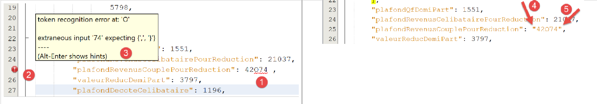
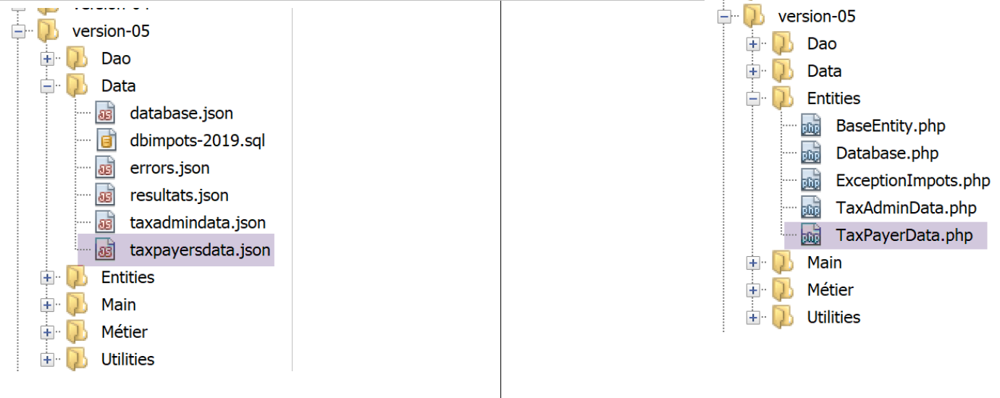

13. Practical Exercise – version 5

We have already written several versions of this exercise. The latest, version, used a layered architecture:

The [dao] layer implements a [InterfaceDao] interface. We built a class that implements this interface:
- [DaoImpotsWithTaxAdminDataInJsonFile], which retrieved tax data from a file jSON;
We will implement the [InterfaceDao] interface using a new class, [DaoImpotsWithTaxAdminDataInDatabase], which will retrieve data from the tax authority in a database named MySQL.
13.1. Creating the [dbimpots-2019] database
Following the example in the linked paragraph, we are building a MySQL database named [dbimpots-2019], owned by [admimpots] with the password [mdpimpots]:

- In [1-4] above, we see the database [dbimpots-2019], which currently has no tables;

- In the example above ([1-5]), we can see that the user [admimpots] has full access to the database [dbimpots-2019]. What we don’t see here is that this user has the password [admimpots];
We will now create the table [tbtranches], which will contain the tax brackets:

- In [1-7], we create a table named [tbtranches] with 4 columns;

- In [3-6], we define a column named [id] (3), of type integer [int] (4), which will be the primary key [6] of the table and will be auto-incremented [5] by SGBD. This means that MySQL will manage the primary key values itself during insertions. It will assign the value 1 to the primary key of the first insertion, then 2 to the next, and so on;
- In [7], the wizard offers additional configuration options for the primary key. Here, we simply accept the default values in [7];

- In [8-16], we define the other three columns of the table:
- [limites] (8), a decimal number (9) with 10 digits, including 2 decimal places (10), will contain the elements of column 17 of the tax brackets;
- [coeffR] (11) of type decimal number (12) with 6 digits, including 2 decimal places (13), will contain the elements of column 18 of the tax brackets;
- [coeffN] (14), a 10-digit decimal number (15) with 2 decimal places (16), will contain the elements of column 19 of the tax brackets;
After validating this structure, we obtain the following result:

- In [5], the key icon indicates that column [id] is the primary key. We can also see that this primary key has integer values (6) and is managed (auto-incremented) by MySQL;
In the same way that we created the table [tbtranches], we construct the table [tbconstantes], which will contain the constants for tax calculation:

It is possible to export the database structure to a text file as a sequence of commands SQL:

option and [5] export only the database structure here, not its content. In our case, the database does not yet have any content.


option [11] produces the following file: SQL [dbimpots-2019.sql]:
-- phpMyAdmin SQL Dump
-- version 4.8.5
-- https://www.phpmyadmin.net/
--
-- Host: localhost:3306
-- Generation Time: Jun 30, 2019 at 01:10 PM
-- Server version: 5.7.24
-- PHP Version: 7.2.11
SET SQL_MODE = "NO_AUTO_VALUE_ON_ZERO";
SET AUTOCOMMIT = 0;
START TRANSACTION;
SET time_zone = "+00:00";
/*!40101 SET @OLD_CHARACTER_SET_CLIENT=@@CHARACTER_SET_CLIENT */;
/*!40101 SET @OLD_CHARACTER_SET_RESULTS=@@CHARACTER_SET_RESULTS */;
/*!40101 SET @OLD_COLLATION_CONNECTION=@@COLLATION_CONNECTION */;
/*!40101 SET NAMES utf8mb4 */;
--
-- Database: `dbimpots-2019`
--
CREATE DATABASE IF NOT EXISTS `dbimpots-2019` DEFAULT CHARACTER SET utf8 COLLATE utf8_general_ci;
USE `dbimpots-2019`;
-- --------------------------------------------------------
--
-- Table structure for table `tbconstants`
--
DROP TABLE IF EXISTS `tbconstantes`;
CREATE TABLE `tbconstantes` (
`id` int(11) NOT NULL,
`plafondQfDemiPart` decimal(10,2) NOT NULL,
`plafondRevenusCelibatairePourReduction` decimal(10,2) NOT NULL,
`plafondRevenusCouplePourReduction` decimal(10,2) NOT NULL,
`valeurReducDemiPart` decimal(10,2) NOT NULL,
`plafondDecoteCelibataire` decimal(10,2) NOT NULL,
`plafondDecoteCouple` decimal(10,2) NOT NULL,
`plafondImpotCelibatairePourDecote` decimal(10,2) NOT NULL,
`plafondImpotCouplePourDecote` decimal(10,2) NOT NULL,
`abattementDixPourcentMax` decimal(10,2) NOT NULL,
`abattementDixPourcentMin` decimal(10,2) NOT NULL
) ENGINE=InnoDB DEFAULT CHARSET=utf8;
-- --------------------------------------------------------
--
-- Table structure for table `tbtranches`
--
DROP TABLE IF EXISTS `tbtranches`;
CREATE TABLE `tbtranches` (
`id` int(11) NOT NULL,
`limites` decimal(10,2) NOT NULL,
`coeffR` decimal(10,2) NOT NULL,
`coeffN` decimal(10,2) NOT NULL
) ENGINE=InnoDB DEFAULT CHARSET=utf8;
--
-- Indexes for dumped tables
--
--
-- Indexes for table `tbconstants`
--
ALTER TABLE `tbconstantes`
ADD PRIMARY KEY (`id`);
--
-- Indexes for table `tbtranches`
--
ALTER TABLE `tbtranches`
ADD PRIMARY KEY (`id`);
--
-- AUTO_INCREMENT for dumped tables
--
--
-- AUTO_INCREMENT for table `tbconstants`
--
ALTER TABLE `tbconstantes`
MODIFY `id` int(11) NOT NULL AUTO_INCREMENT;
--
-- AUTO_INCREMENT for table `tbtranches`
--
ALTER TABLE `tbtranches`
MODIFY `id` int(11) NOT NULL AUTO_INCREMENT;
COMMIT;
/*!40101 SET CHARACTER_SET_CLIENT=@OLD_CHARACTER_SET_CLIENT */;
/*!40101 SET CHARACTER_SET_RESULTS=@OLD_CHARACTER_SET_RESULTS */;
/*!40101 SET COLLATION_CONNECTION=@OLD_COLLATION_CONNECTION */;
You can use this SQL file to regenerate the [dbimpots-2019] database if it has been destroyed or corrupted. There is no need to delete the database before regenerating it, as the SQL script handles this automatically:


13.2. Code Organization
To better illustrate the role of the various PHP scripts we are writing, we will organize our code into folders:

- in [1], an overview of version 05;
- in [2], the application entities, entities exchanged between layers;
- in [3], the application utilities;
- in [4], the data used or produced by the application. Here, we have decided to use only jSON files for text files. These offer several advantages:
- they are recognized by many tools;
- these tools support syntax highlighting. Furthermore, the jSON format has specific rules. When these rules are not followed, the tools flag them. For example, a difficult-to-detect error in a basic text file is the use of uppercase or lowercase O instead of zeros. If this error occurs, it will be flagged. Indeed, in the jSON code:
"plafondRevenusCouplePourReduction": 42O74
where a capital O was inadvertently used instead of a zero in [42074], Netbeans flags the error:

In fact, Netbeans recognizes the uppercase O, which makes [49O74] a string. It concludes that the syntax should be [4-5]: the string [47O74] should be enclosed in quotation marks. The developer’s attention is thus drawn to the error and can correct it: either add the quotation marks or replace the O with a zero;
The other elements of version 05 are as follows:

- in [6], the interfaces and classes of the [Dao] layer;
- in [7], the interfaces and classes of the [métier] layer;
- in [8], the main scripts from version 05;
version 05 has two distinct objectives:
- to populate the MySQL and [dbimpots-2019] databases with the contents of the jSON and [Data/txadmindata.json] files;
- to implement tax calculation using tax data now sourced from the MySQL and [dbimpots-2019] databases;
We will address these two objectives separately.
13.3. Populating the [dbimpots-2019] database
13.3.1. Objective
The text file taxadmindata.json contains data from the tax administration:
{
"limites": [
9964,
27519,
73779,
156244,
0
],
"coeffR": [
0,
0.14,
0.3,
0.41,
0.45
],
"coeffN": [
0,
1394.96,
5798,
13913.69,
20163.45
],
"plafondQfDemiPart": 1551,
"plafondRevenusCelibatairePourReduction": 21037,
"plafondRevenusCouplePourReduction": 42074,
"valeurReducDemiPart": 3797,
"plafondDecoteCelibataire": 1196,
"plafondDecoteCouple": 1970,
"plafondImpotCouplePourDecote": 2627,
"plafondImpotCelibatairePourDecote": 1595,
"abattementDixPourcentMax": 12502,
"abattementDixPourcentMin": 437
}
Our goal is to transfer this data to the previously created MySQL [dbimpots-2019] database.
13.3.2. The entities

The [Database] entity will be used to encapsulate the data from the following jSON [database.json] file:
{
"dsn": "mysql:host=localhost;dbname=dbimpots-2019",
"id": "admimpots",
"pwd": "mdpimpots",
"tableTranches": "tbtranches",
"colLimites": "limites",
"colCoeffR": "coeffr",
"colCoeffN": "coeffn",
"tableConstantes": "tbconstantes",
"colPlafondQfDemiPart": "plafondQfDemiPart",
"colPlafondRevenusCelibatairePourReduction": "plafondRevenusCelibatairePourReduction",
"colPlafondRevenusCouplePourReduction": "plafondRevenusCouplePourReduction",
"colValeurReducDemiPart": "valeurReducDemiPart",
"colPlafondDecoteCelibataire": "plafondDecoteCelibataire",
"colPlafondDecoteCouple": "plafondDecoteCouple",
"colPlafondImpotCelibatairePourDecote": "plafondImpotCelibatairePourDecote",
"colPlafondImpotCouplePourDecote": "plafondImpotCouplePourDecote",
"colAbattementDixPourcentMax": "abattementDixPourcentMax",
"colAbattementDixPourcentMin": "abattementDixPourcentMin"
}
The entity [TaxAdminData] will be used to encapsulate the data from the following jSON and [taxadmindata.json] files:
{
"limites": [
9964,
27519,
73779,
156244,
0
],
"coeffR": [
0,
0.14,
0.3,
0.41,
0.45
],
"coeffN": [
0,
1394.96,
5798,
13913.69,
20163.45
],
"plafondQfDemiPart": 1551,
"plafondRevenusCelibatairePourReduction": 21037,
"plafondRevenusCouplePourReduction": 42074,
"valeurReducDemiPart": 3797,
"plafondDecoteCelibataire": 1196,
"plafondDecoteCouple": 1970,
"plafondImpotCouplePourDecote": 2627,
"plafondImpotCelibatairePourDecote": 1595,
"abattementDixPourcentMax": 12502,
"abattementDixPourcentMin": 437
}
The entity [TaxPayerData] will be used to encapsulate the data from the following jSON and [taxpayerdata.json] files:
[
{
"marié": "oui",
"enfants": 2,
"salaire": 55555
},
{
"marié": "ouix",
"enfants": "2x",
"salaire": "55555x"
},
{
"marié": "oui",
"enfants": "2",
"salaire": 50000
},
{
"marié": "oui",
"enfants": 3,
"salaire": 50000
},
{
"marié": "non",
"enfants": 2,
"salaire": 100000
},
{
"marié": "non",
"enfants": 3,
"salaire": 100000
},
{
"marié": "oui",
"enfants": 3,
"salaire": 100000
},
{
"marié": "oui",
"enfants": 5,
"salaire": 100000
},
{
"marié": "non",
"enfants": 0,
"salaire": 100000
},
{
"marié": "oui",
"enfants": 2,
"salaire": 30000
},
{
"marié": "non",
"enfants": 0,
"salaire": 200000
},
{
"marié": "oui",
"enfants": 3,
"salaire": 20000
}
]
13.3.2.1. The base class [BaseEntity]
To simplify the entity code, we will adopt the following rule: the attributes of an entity have the same names as the attributes in the jSON file that the entity is intended to encapsulate. Based on this rule, the [Database, TaxAdminData, TaxPayerData] entities share common features that can be factored into a parent class. This will be the following [BaseEntity] class:
<?php
namespace Application;
class BaseEntity {
// attribute
protected $arrayOfAttributes;
// initialization from a jSON file
public function setFromJsonFile(string $jsonFilename) {
// retrieve the contents of the tax data file
$fileContents = \file_get_contents($jsonFilename);
$erreur = FALSE;
// mistake?
if (!$fileContents) {
// we note the error
$erreur = TRUE;
$message = "Le fichier des données [$jsonFilename] n'existe pas";
}
if (!$erreur) {
// retrieve the jSON code from the configuration file in an associative array
$this->arrayOfAttributes = \json_decode($fileContents, true);
// mistake?
if ($this->arrayOfAttributes === FALSE) {
// we note the error
$erreur = TRUE;
$message = "Le fichier de données jSON [$jsonFilename] n'a pu être exploité correctement";
}
}
// mistake?
if ($erreur) {
// throw an exception
throw new ExceptionImpots($message);
}
// initialization of class attributes
foreach ($this->arrayOfAttributes as $key => $value) {
$this->$key = $value;
}
// we return the object
return $this;
}
public function checkForAllAttributes() {
// check that all keys have been initialized
foreach (\array_keys($this->arrayOfAttributes) as $key) {
if ($key !== "arrayOfAttributes" && !isset($this->$key)) {
throw new ExceptionImpots("L'attribut [$key] de la classe "
. get_class($this) . " n'a pas été initialisé");
}
}
}
public function setFromArrayOfAttributes(array $arrayOfAttributes) {
// on initialise certains attributs de la classe
foreach ($arrayOfAttributes as $key => $value) {
$this->$key = $value;
}
// object is returned
return $this;
}
// toString
public function __toString() {
// object attributes
$arrayOfAttributes = \get_object_vars($this);
// remove parent class attribute
unset($arrayOfAttributes["arrayOfAttributes"]);
// string Json of object
return \json_encode($arrayOfAttributes, JSON_UNESCAPED_UNICODE);
}
// getter
public function getArrayOfAttributes() {
return $this->arrayOfAttributes;
}
}
Comments
- line 5: the class [BaseEntity] is intended to be extended by the classes [Database, TaxAdminData, TaxPayerData];
- line 7: the [$arrayOfAttributes] attribute is an array containing all the attributes of the child class that extended [BaseEntity], along with their values;
- lines 9–41: the attribute [$arrayOfAttributes] is initialized from the file jSON [$jsonFilename] passed as a parameter. A [ExceptionImpot] exception is thrown if the file jSON could not be read or if it is not a valid jSON file;
- lines 36–38: this is special code if executed by a child class. In this case, [$this] represents an instance of the child class [Database, TaxAdminData, TaxPayerData], and in this case, lines 36–38 initialize the attributes of this child class, provided that these attributes have the visibility protected (or public) (see the "link" section). Indeed, it was stated that the attributes of the [Database, TaxAdminData, TaxPayerData] entities were the same as the attributes of the jSON file they encapsulated. Finally, the [setFromJsonFile] method allows a child class to initialize itself from a jSON file;
- line 40: the object [$this] is set to an instance of a child class if the method [setFromJsonFile] was called by a child class;
- lines 43–51: the [checkForAllAttributes] method allows a child class to verify that all its attributes have been initialized. If this is not the case, a [ExceptionImpots] exception is thrown. This method allows the child class to verify that its jSON file has not omitted certain attributes;
- lines 53–60: the [setFromArrayOfAttributes] method allows a child class to initialize all or some of its attributes from an associative array whose keys have the same names as the attributes of the child class to be initialized;
- lines 63–70: the [__toString] method provides the jSON representation of a child class;
13.3.2.2. The entity [Database]
The [Database] entity is as follows:
<?php
namespace Application;
class Database extends BaseEntity {
// attributes
protected $dsn;
protected $id;
protected $pwd;
protected $tableTranches;
protected $colLimites;
protected $colCoeffR;
protected $colCoeffN;
protected $tableConstantes;
protected $colPlafondQfDemiPart;
protected $colPlafondRevenusCelibatairePourReduction;
protected $colPlafondRevenusCouplePourReduction;
protected $colValeurReducDemiPart;
protected $colPlafondDecoteCelibataire;
protected $colPlafondDecoteCouple;
protected $colPlafondImpotCelibatairePourDecote;
protected $colPlafondImpotCouplePourDecote;
protected $colAbattementDixPourcentMax;
protected $colAbattementDixPourcentMin;
…
}
The [Database] class is used to encapsulate the data from the following jSON and [database.json] files:
{
"dsn": "mysql:host=localhost;dbname=dbimpots-2019",
"id": "admimpots",
"pwd": "mdpimpots",
"tableTranches": "tbtranches",
"colLimites": "limites",
"colCoeffR": "coeffr",
"colCoeffN": "coeffn",
"tableConstantes": "tbconstantes",
"colPlafondQfDemiPart": "plafondQfDemiPart",
"colPlafondRevenusCelibatairePourReduction": "plafondRevenusCelibatairePourReduction",
"colPlafondRevenusCouplePourReduction": "plafondRevenusCouplePourReduction",
"colValeurReducDemiPart": "valeurReducDemiPart",
"colPlafondDecoteCelibataire": "plafondDecoteCelibataire",
"colPlafondDecoteCouple": "plafondDecoteCouple",
"colPlafondImpotCelibatairePourDecote": "plafondImpotCelibatairePourDecote",
"colPlafondImpotCouplePourDecote": "plafondImpotCouplePourDecote",
"colAbattementDixPourcentMax": "abattementDixPourcentMax",
"colAbattementDixPourcentMin": "abattementDixPourcentMin"
}
The class and the jSON file have the same attributes. These describe the characteristics of the MySQL and [dbimpots-2019] databases:
dsn | Database name DSN |
id | Database owner |
pwd | Password |
tableTranches | Name of the table containing the tax brackets |
colLimites colCoeffR colCoeffN | Column names in the table [tableTranches] |
tableConstantes | Name of the table containing tax calculation constants |
colPlafondQfDemiPart colPlafondRevenusCelibatairePourReduction colPlafondRevenusCouplePourReduction colValeurReducDemiPart colPlafondDecoteCelibataire colPlafondDecoteCouple colPlafondImpotCelibatairePourDecote colPlafondImpotCouplePourDecote colAbattementDixPourcentMax colAbattementDixPourcentMin | Column names in table [tableConstantes] containing tax calculation constants |
Why name the tables and columns when we already know their names and they are not likely to change? After SGBD and MySQL, we will use SGBD and PostgreSQL to store tax administration data. However, the names of the Postgres columns and tables do not follow the same rules as MySQL. We will have to use different names. This is also true for other SGBD instances. If we want the code to be portable across SGBD instances, it is better to use parameters rather than hard-coded table and column names.
Let’s go back to the code for the [Database] class:
<?php
namespace Application;
class Database extends BaseEntity {
// attributes
protected $dsn;
protected $id;
protected $pwd;
protected $tableTranches;
protected $colLimites;
protected $colCoeffR;
protected $colCoeffN;
protected $tableConstantes;
protected $colPlafondQfDemiPart;
protected $colPlafondRevenusCelibatairePourReduction;
protected $colPlafondRevenusCouplePourReduction;
protected $colValeurReducDemiPart;
protected $colPlafondDecoteCelibataire;
protected $colPlafondDecoteCouple;
protected $colPlafondImpotCelibatairePourDecote;
protected $colPlafondImpotCouplePourDecote;
protected $colAbattementDixPourcentMax;
protected $colAbattementDixPourcentMin;
// setter
// initialization
public function setFromJsonFile(string $jsonFilename) {
// parent
parent::setFromJsonFile($jsonFilename);
// check that all attributes have been initialized
parent::checkForAllAttributes();
// object is returned
return $this;
}
// getters and setters
public function getDsn() {
return $this->dsn;
}
…
public function setDsn($dsn) {
$this->dsn = $dsn;
return $this;
}
…
}
Comments
- lines 7–24: all class attributes have visibility [protected]. This is the condition for them to be modifiable from the parent class [BaseEntity] (see linked section);
- lines 28–35: The method [setFromJsonFile] allows the attributes of the class [Database] to be initialized based on the contents of a file jSON passed as a parameter. The attributes of the jSON file and those of the [Database] class must be identical. If the jSON file is unusable, an exception is thrown;
- line 30: the parent class performs the initialization;
- line 32: the parent class is asked to verify that all attributes of the [Database] class have been initialized. If this is not the case, an exception is thrown;
- line 34: the newly initialized [Database] instance is returned;
- lines 37 and beyond: the getters and setters for the class attributes;
13.3.2.3. The [TaxAdminData] entity
The entity [TaxAdminData] is as follows:
<?php
namespace Application;
class TaxAdminData extends BaseEntity {
// tax brackets
protected $limites;
protected $coeffR;
protected $coeffN;
// tax calculation constants
protected $plafondQfDemiPart;
protected $plafondRevenusCelibatairePourReduction;
protected $plafondRevenusCouplePourReduction;
protected $valeurReducDemiPart;
protected $plafondDecoteCelibataire;
protected $plafondDecoteCouple;
protected $plafondImpotCouplePourDecote;
protected $plafondImpotCelibatairePourDecote;
protected $abattementDixPourcentMax;
protected $abattementDixPourcentMin;
…
}
The [TaxAdminData] class is used to encapsulate the data from the following jSON and [taxadmindata.json] files:
{
"limites": [
9964,
27519,
73779,
156244,
0
],
"coeffR": [
0,
0.14,
0.3,
0.41,
0.45
],
"coeffN": [
0,
1394.96,
5798,
13913.69,
20163.45
],
"plafondQfDemiPart": 1551,
"plafondRevenusCelibatairePourReduction": 21037,
"plafondRevenusCouplePourReduction": 42074,
"valeurReducDemiPart": 3797,
"plafondDecoteCelibataire": 1196,
"plafondDecoteCouple": 1970,
"plafondImpotCouplePourDecote": 2627,
"plafondImpotCelibatairePourDecote": 1595,
"abattementDixPourcentMax": 12502,
"abattementDixPourcentMin": 437
}
The class and the file jSON have the same attributes. These represent data from the tax administration. The rest of the code for the class [TaxAdminData] is as follows:
<?php
namespace Application;
class TaxAdminData extends BaseEntity {
// tax brackets
protected $limites;
protected $coeffR;
protected $coeffN;
// tax calculation constants
protected $plafondQfDemiPart;
protected $plafondRevenusCelibatairePourReduction;
protected $plafondRevenusCouplePourReduction;
protected $valeurReducDemiPart;
protected $plafondDecoteCelibataire;
protected $plafondDecoteCouple;
protected $plafondImpotCouplePourDecote;
protected $plafondImpotCelibatairePourDecote;
protected $abattementDixPourcentMax;
protected $abattementDixPourcentMin;
// initialization
public function setFromJsonFile(string $taxAdminDataFilename) {
// parent
parent::setFromJsonFile($taxAdminDataFilename);
// check that all attributes have been initialized
parent::checkForAllAttributes();
// check that attribute values are real >=0
foreach ($this as $key => $value) {
if ($key !== "arrayOfAttributes") {
// $value must be a real number >=0 or an array of reals >=0
$result = $this->check($value);
// mistake?
if ($result->erreur) {
// throw an exception
throw new ExceptionImpots("La valeur de l'attribut [$key] est invalide");
} else {
// we note the value
$this->$key = $result->value;
}
}
}
// we return the object
return $this;
}
protected function check($value): \stdClass {
// $value is an array of elements of type string or a single element
if (!\is_array($value)) {
$tableau = [$value];
} else {
$tableau = $value;
}
// transform the array of strings into an array of reals
$newTableau = [];
$result = new \stdClass();
// table elements must be positive or zero decimal numbers
$modèle = '/^\s*([+]?)\s*(\d+\.\d*|\.\d+|\d+)\s*$/';
for ($i = 0; $i < count($tableau); $i ++) {
if (preg_match($modèle, $tableau[$i])) {
// put the float in newTableau
$newTableau[] = (float) $tableau[$i];
} else {
// we note the error
$result->erreur = TRUE;
// we leave
return $result;
}
}
// we return the result
$result->erreur = FALSE;
if (!\is_array($value)) {
// a single value
$result->value = $newTableau[0];
} else {
// a list of values
$result->value = $newTableau;
}
return $result;
}
// getters and setters
…
}
Comments
- line 23: the [setFromJsonFile] method is used to initialize the attributes of the [TaxAdminData] class from a jSON file passed as a parameter. The attributes in the jSON file must exist under the same names in the class;
- line 25: the parent class performs this task;
- line 27: the parent class is asked to verify that all attributes of the child class have been initialized;
- lines 29–42: we check locally that all attributes have a positive or zero real value. This check has already been discussed in the link section of version 03;
13.3.3. The [dao] layer
Now we can write the code that will transfer data from the [taxadmindata.json] text file into the [tbtranches, tbconstantes] tables of the MySQL database. We will adopt the following architecture:


The [dao] layer will implement the following [InterfaceDao4TransferAdminDataFromFile2Database] interface:
<?php
// namespace
namespace Application;
interface InterfaceDao4TransferAdminData2Database {
public function transferAdminData2Database(): void;
}
Comments
- line 8: the [transferAdminData2Database] method is responsible for storing tax administration data in a database;
The [InterfaceDao4TransferAdminData2Database] interface will be implemented by the following [DaoTransferAdminDataFromJsonFile2Database] class:
<?php
// namespace
namespace Application;
// definition of a TransferAdminDataFromFile2DatabaseDao class
class DaoTransferAdminDataFromJsonFile2Database implements InterfaceDao4TransferAdminData2Database {
// target database attributes
private $database;
// tax administration data
private $taxAdminData;
// manufacturer
public function __construct(string $databaseFilename, string $taxAdminDataFilename) {
// save configuration
$this->database = (new Database())->setFromJsonFile($databaseFilename);
// tax data is stored
$this->taxAdminData = (new TaxAdminData())->setFromJsonFile($taxAdminDataFilename);
}
// transfers tax bracket data from a text file
// to database
public function transferAdminData2Database(): void {
// we work on the basis
$database = $this->database;
try {
// open the database connection
$connexion = new \PDO($database->getDsn(), $database->getId(), $database->getPwd());
// we want every SGBD error to trigger an exception
$connexion->setAttribute(\PDO::ATTR_ERRMODE, \PDO::ERRMODE_EXCEPTION);
// start a transaction
$connexion->beginTransaction();
// fill in the tax bracket table
$this->fillTableTranches($connexion);
// fill in the constants table
$this->fillTableConstantes($connexion);
// the transaction is completed successfully
$connexion->commit();
} catch (\PDOException $ex) {
// is there a transaction in progress?
if (isset($connexion) && $connexion->inTransaction()) {
// transaction ends in failure
$connexion->rollBack();
}
// trace the exception back to the calling code
throw new ExceptionImpots($ex->getMessage());
} finally {
// close the connection
$connexion = NULL;
}
}
// filling the tax bracket table
private function fillTableTranches($connexion): void {
…
}
// filling the constants table
private function fillTableConstantes($connexion): void {
…
}
}
Comments
Here we are applying what we learned in the chapter on MySQL.
- line 7: the class [DaoTransferAdminDataFromJsonFile2Database] implements the interface [InterfaceDao4TransferAdminData2Database];
- line 9: the attribute [$database] is an object of type [Database] encapsulating the data from the file [database.json];
- line 11: the attribute [$taxAdminData] is an object of type [TaxAdminData] encapsulating the data from the file [taxadmindata.json];
- lines 14–19: the constructor receives the names of the [database.json, taxadmindata.json] files as parameters;
- line 16: initialization of the [$database] attribute;
- line 18: initialization of the [$taxAdminData] attribute;
- line 23: implementation of the single method of the [InterfaceDao4TransferAdminData2Database] interface;
- lines 26–38: populate the [tbtranches, tbconstantes] tables in two steps:
- line 34: first, the [tbtranches] table is populated. This is done within a transaction (lines 32, 38). The method [fillTableTranches] (line 55) throws an exception as soon as something goes wrong. In this case, execution continues with the catch / finally blocks in lines 39–50;
- line 36: the table [tbconstantes] is populated in the same way using the method [fillTableConstantes] (line 60);
- lines 39–47: case where an exception was thrown by the code;
- lines 41–44: if a transaction exists, it is rolled back;
- line 46: an exception of type [ExceptionImpots] is thrown with the message of the original exception, which is of any type;
- lines 47–50: in the [finally] clause, the connection is closed;
The code for the [fillTableTranches] method is as follows:
private function fillTableTranches($connexion): void {
// shortcut for comics
$database = $this->database;
// the data to be inserted into the database
$limites = $this->taxAdminData->getLimites();
$coeffR = $this->taxAdminData->getCoeffR();
$coeffN = $this->taxAdminData->getCoeffN();
// empty the table in case there's anything in it
$statement = $connexion->prepare("delete from " . $database->getTableTranches());
$statement->execute();
// preparing inserts
$sqlInsert = "insert into {$database->getTableTranches()} "
. "({$database->getColLimites()}, {$database->getColCoeffR()},"
. " {$database->getColCoeffN()}) values (:limites, :coeffR, :coeffN)";
$statement = $connexion->prepare($sqlInsert);
// execute the prepared order with the tax bracket values
for ($i = 0; $i < count($limites); $i++) {
$statement->execute([
"limites" => $limites[$i],
"coeffR" => $coeffR[$i],
"coeffN" => $coeffN[$i]]);
}
}
Comments
- line 1: the [fillTableTranches] method receives an open connection as a parameter. We also know that a transaction has started within this connection;
- lines 5–7: The values to be inserted into the table are provided by the [$taxAdminData] attribute;
- lines 9–10: the current contents of the [tbtranches] table are deleted;
- lines 12–15: We prepare to insert rows into the table. Here, we use the column names provided by the attribute [$database];
- lines 17-22: execute the insertion statement prepared in lines 12-15 as many times as necessary;
The code for the [fillTableConstantes] method is as follows:
private function fillTableConstantes($connexion): void {
// shortcut
$database = $this->database;
// empty the table in case there's anything in it
$statement = $connexion->prepare("delete from {$database->getTableConstantes()}");
$statement->execute();
// preparing for integration
$taxAdminData = $this->taxAdminData;
$sqlInsert = "insert into {$database->getTableConstantes()}"
. " ({$database->getColPlafondQfDemiPart()},"
. " {$database->getColPlafondRevenusCelibatairePourReduction()},"
. " {$database->getColPlafondRevenusCouplePourReduction()},"
. " {$database->getColValeurReducDemiPart()},"
. " {$database->getColPlafondDecoteCelibataire()},"
. " {$database->getColPlafondDecoteCouple()},"
. " {$database->getColPlafondImpotCelibatairePourDecote()},"
. " {$database->getColPlafondImpotCouplePourDecote()},"
. " {$database->getColAbattementDixPourcentMax()},"
. " {$database->getColAbattementDixPourcentMin()})"
. " values ("
. ":plafondQfDemiPart,"
. ":plafondRevenusCelibatairePourReduction,"
. ":plafondRevenusCouplePourReduction,"
. ":valeurReducDemiPart,"
. ":plafondDecoteCelibataire,"
. ":plafondDecoteCouple,"
. ":plafondImpotCelibatairePourDecote,"
. ":plafondImpotCouplePourDecote,"
. ":abattementDixPourcentMax,"
. ":abattementDixPourcentMin)";
$statement = $connexion->prepare($sqlInsert);
// we execute the prepared order
$statement->execute([
"plafondQfDemiPart" => $taxAdminData->getPlafondQfDemiPart(),
"plafondRevenusCelibatairePourReduction" => $taxAdminData->getPlafondRevenusCelibatairePourReduction(),
"plafondRevenusCouplePourReduction" => $taxAdminData->getPlafondRevenusCouplePourReduction(),
"valeurReducDemiPart" => $taxAdminData->getValeurReducDemiPart(),
"plafondDecoteCelibataire" => $taxAdminData->getPlafondDecoteCelibataire(),
"plafondDecoteCouple" => $taxAdminData->getPlafondDecoteCouple(),
"plafondImpotCelibatairePourDecote" => $taxAdminData->getPlafondImpotCelibatairePourDecote(),
"plafondImpotCouplePourDecote" => $taxAdminData->getPlafondImpotCouplePourDecote(),
"abattementDixPourcentMax" => $taxAdminData->getAbattementDixPourcentMax(),
"abattementDixPourcentMin" => $taxAdminData->getAbattementDixPourcentMin()
]);
}
Comments
- line 1: the [fillTableConstantes] method receives an open connection as a parameter. We also know that a transaction has started within this connection;
- lines 5-6: the table [tbconstantes] is cleared;
- lines 9–31: preparation of the SQL insert statement. This is complex because there are 10 columns to initialize in this insert operation and the column names must be retrieved from the [$database] attribute;
- lines 33–44: execution of the insert command. There is only one row to insert. Here again, the code is made complex by the fact that the values to be inserted must be retrieved from the [$taxAdminData] attribute;
13.3.4. The main script


The main script relies on the [dao] layer to perform the data transfer:
<?php
// strict adherence to declared types of function parameters
declare (strict_types=1);
// namespace
namespace Application;
// error handling by PHP
// ini_set("display_errors", "0");
// interface and class inclusion
require_once __DIR__ . "/../Entities/BaseEntity.php";
require_once __DIR__ . "/../Entities/TaxAdminData.php";
require_once __DIR__ . "/../Entities/TaxPayerData.php";
require_once __DIR__ . "/../Entities/Database.php";
require_once __DIR__ . "/../Entities/ExceptionImpots.php";
require_once __DIR__ . "/../Utilities/Utilitaires.php";
require_once __DIR__ . "/../Dao/InterfaceDao.php";
require_once __DIR__ . "/../Dao/TraitDao.php";
require_once __DIR__ . "/../Dao/InterfaceDao4TransferAdminData2Database.php";
require_once __DIR__ . "/../Dao/DaoTransferAdminDataFromJsonFile2Database.php";
//
// definition of constants
const DATABASE_CONFIG_FILENAME = "../Data/database.json";
const TAXADMINDATA_FILENAME = "../Data/taxadmindata.json";
//
try {
// creation of the [dao] layer
$dao = new DaoTransferAdminDataFromJsonFile2Database(DATABASE_CONFIG_FILENAME, TAXADMINDATA_FILENAME);
// data transfer to the database
$dao->transferAdminData2Database();
} catch (ExceptionImpots $ex) {
// error is displayed
print "L'erreur suivante s'est produite : " . utf8_encode($ex->getMessage()) . "\n";
}
// end
print "Terminé\n";
exit;
Comments
- lines 12-21: loading the application's classes and interfaces;
- lines 24-24: the two jSON files;
- line 30: instantiate the [dao] layer by passing the two jSON files to the constructor;
- line 32: data transfer is performed;
When we run this code, we get the following result in the database:

Column [3] shows the values assigned by MySQL to the primary key [id]. The numbering starts at 1. The screenshot above was taken after running the script several times.


13.4. Tax calculation

13.4.1. Architecture
version 04 of the tax calculation application used a layered architecture:

The [dao] layer implements a [InterfaceDao] interface. We built a class implementing this interface:
- [DaoImpotsWithTaxAdminDataInJsonFile], which retrieved tax data from a jSON file. This was the version 04;
We will implement the [InterfaceDao] interface using a new class, [DaoImpotsWithTaxAdminDataInDatabase], which will retrieve data from the tax authority from a MySQL database. The [dao] layer, as before, will write the results and errors to text files and retrieve taxpayer data from a text file as well. Only this time, these text files will be jSON files. Furthermore, we know that if we continue to adhere to the [InterfaceDao] interface, the [métier] layer will not need to be modified.

13.4.2. The [TaxPayerData] entity

The [TaxPayerData] class is used to encapsulate the data from the following jSON and [taxpayersdata.json] files into a class:
[
{
"marié": "oui",
"enfants": 2,
"salaire": 55555
},
{
"marié": "ouix",
"enfants": "2x",
"salaire": "55555x"
},
{
"marié": "oui",
"enfants": "2",
"salaire": 50000
},
{
"marié": "oui",
"enfants": 3,
"salaire": 50000
},
{
"marié": "non",
"enfants": 2,
"salaire": 100000
},
{
"marié": "non",
"enfants": 3,
"salaire": 100000
},
{
"marié": "oui",
"enfants": 3,
"salaire": 100000
},
{
"marié": "oui",
"enfants": 5,
"salaire": 100000
},
{
"marié": "non",
"enfants": 0,
"salaire": 100000
},
{
"marié": "oui",
"enfants": 2,
"salaire": 30000
},
{
"marié": "non",
"enfants": 0,
"salaire": 200000
},
{
"marié": "oui",
"enfants": 3,
"salaire": 20000
}
]
The class [TaxPayerData] is as follows:
<?php
// namespace
namespace Application;
// data class
class TaxPayerData extends BaseEntity {
// data required to calculate the taxpayer's tax liability
protected $marié;
protected $enfants;
protected $salaire;
// tax calculation results
protected $impôt;
protected $surcôte;
protected $décôte;
protected $réduction;
protected $taux;
// getters and setters
…
}
Comments
- line 7: the class [TaxPayerData] extends the class [BaseEntity]. Since the methods of its parent class are sufficient, the class [TaxPayerData] does not define any of its own. Note that the attributes of the [TaxPayerData] class are identical to those of the jSON and [taxpayersdata.json] files;
13.4.3. The [dao] layer
13.4.3.1. The [TraitDao] trait
The [TraitDao] trait implements part of the [InterfaceDao] interface. Here is a reminder of that interface:
<?php
// namespace
namespace Application;
interface InterfaceDao {
// reading taxpayer data
public function getTaxPayersData(string $taxPayersFilename, string $errorsFilename): array;
// reading tax data (tax brackets)
public function getTaxAdminData(): TaxAdminData;
// recording results
public function saveResults(string $resultsFilename, array $taxPayersData): void;
}
The [TraitDao] feature implements the [getTaxPayersData, saveResults] methods of the [InterfaceDao] interface. Because the definition of the [TaxPayerData] entity was changed between versions 04 and 05, we need to revise the code for [TraitDao]:
<?php
// namespace
namespace Application;
trait TraitDao {
// reading taxpayer data
public function getTaxPayersData(string $taxPayersFilename, string $errorsFilename): array {
// retrieve taxpayer data in a table
$baseEntity = new BaseEntity();
$baseEntity->setFromJsonFile($taxPayersFilename);
$arrayOfAttributes = $baseEntity->getArrayOfAttributes();
// taxpayer data table
$taxPayersData = [];
// error table
$errors = [];
// we loop over the array of attributes of elements of type [TaxPayerData]
$i = 0;
foreach ($arrayOfAttributes as $attributesOfTaxPayerData) {
// check
$error = $this->check($attributesOfTaxPayerData);
if (!$error) {
// one more taxpayer
$taxPayersData[] = (new TaxPayerData())->setFrOmArrayOfAttributes($attributesOfTaxPayerData);
} else {
// an error of + - the invalid data number is noted
$error = ["numéro" => $i] + $error;
$errors[] = $error;
}
// following
$i++;
}
// save errors in a json file
$string = "";
foreach ($errors as $error) {
$string .= \json_encode($error, JSON_UNESCAPED_UNICODE) . "\n";
}
$this->saveString($errorsFilename, $string);
// function result
return $taxPayersData;
}
private function check(array $attributesOfTaxPayerData): array {
// check the data in [$taxPayerData]
// the list of erroneous attributes
$attributes = [];
// marital status must be yes or no
$marié = trim(strtolower($attributesOfTaxPayerData["marié"]));
$erreur = ($marié !== "oui" and $marié !== "non");
if ($erreur) {
// we note the error
$attributes[] = ["marié" => $marié];
}
// the number of children must be a positive integer or zero
$enfants = trim($attributesOfTaxPayerData["enfants"]);
if (!preg_match("/^\d+$/", $enfants)) {
// we note the error
$erreur = TRUE;
$attributes[] = ["enfants" => $enfants];
} else {
$enfants = (int) $enfants;
}
// the salary must be a positive integer or zero (without euro cents)
$salaire = trim($attributesOfTaxPayerData["salaire"]);
if (!preg_match("/^\d+$/", $salaire)) {
// we note the error
$erreur = TRUE;
$attributes[] = ["salaire" => $salaire];
} else {
$salaire = (int) $salaire;
}
// mistake?
if ($erreur) {
// return with error
return ["erreurs" => $attributes];
} else {
// error-free return
return [];
}
}
// recording results
public function saveResults(string $resultsFilename, array $taxPayersData): void {
// save table [$taxPayersData] in text file [$resultsFileName]
// if text file [$resultsFileName] does not exist, it is created
// construction of the jSON results chain
$string = "[" . implode(",
", $taxPayersData) . "]";
// recording this channel
$this->saveString($resultsFilename, $string);
}
// saving table results in a text file
private function saveString(string $fileName, string $data): void {
// save string [$data] in text file [$fileName]
// if text file [$fileName] does not exist, it is created
if (file_put_contents($fileName, $data) === FALSE) {
throw new ExceptionImpots("Erreur lors de l'enregistrement de données dans le fichier texte [$fileName]");
}
}
}
Comments
- [TraitDao] implements the methods [getTaxPayersData] (line 9) and [saveResults] (line 86) of the [InterfaceDao] interface;
- line 9: the [getTaxPayersData] method receives the following parameters:
- [$taxPayersFilename]: the name of the jSON file containing taxpayer data [taxpayersdata.json];
- [$errorsFilename]: the name of the jSON file containing errors [errors.json];
- lines 11–13: the contents of the jSON file containing taxpayer data are transferred to an associative array [$arrayOfAttributes]. If the file jSON proves unusable, a [ExceptionImpots] exception is thrown;
- line 15: the array [$taxPayersData] will contain taxpayer data encapsulated in objects of type [TaxPayerData];
- line 17: errors will be accumulated in the array [$errors];
- lines 99–33: construction of the array [$taxPayersData];
- line 22: before being encapsulated in a [TaxPayerData] type, the data is verified. The [check] method returns:
- an array [‘erreurs’=>[…]] containing the erroneous attributes if the data is incorrect;
- an empty array if the data is valid;
- line 25: case where the data is valid. A new object [TaxPayerData] is created and added to the array [$taxPayersData];
- lines 26–30: case where the data is invalid. The error log records the ID of the erroneous [TaxPayerData] object in the jSON file so that the user can locate it, then the error is added to the [$errors] array;
- lines 35–39: the errors encountered are recorded in the file jSON ([$errorsFilename] passed as a parameter, line 9);
- line 41: the array of constructed [TaxPayerData] objects is returned: this was the method’s objective;
- lines 44–83: the private method [check] checks the validity of the parameters [marié, enfants, salaire] in the array [$attributesOfTaxPayerData] passed as a parameter on line 44. If there are any invalid attributes, it accumulates them in the array [$attributes] (lines 47, 53, 60, 70) in the form of an array [‘attribut erroné’=> valeur de l’attribut erroné];
- line 78: if there are errors, a [‘erreurs’=>$attributes] array is returned;
- line 81: if there are no errors, an empty error array is returned;
- lines 86–93: implementation of the [saveResults] method of the [InterfaceDao] interface;
- line 90: construct the string jSON to be written to the file jSON [$resultsFilename] passed as a parameter on line 86. We must construct the string jSON from an array:
- each element of the array is separated from the next by a comma and a line break;
- the entire array is enclosed in square brackets [];
- line 92: the string jSON is saved to the file jSON [$resultsFilename];
13.4.3.2. The [DaoImpotsWithTaxAdminDataInDatabase] class
The class [DaoImpotsWithTaxAdminDataInDatabase] implements the interface [InterfaceDao] as follows:
<?php
// namespace
namespace Application;
// definition of a ImpotsWithDataInDatabase class
class DaoImpotsWithTaxAdminDataInDatabase implements InterfaceDao {
// use of a line
use TraitDao;
// the TaxAdminData object containing tax bracket data
private $taxAdminData;
// the [Database] type object containing the characteristics of the BD
private $database;
// manufacturer
public function __construct(string $databaseFilename) {
// store the jSON configuration of the bd
$this->database = (new Database())->setFromJsonFile($databaseFilename);
// we prepare the attribute
$this->taxAdminData = new TaxAdminData();
try {
// open the database connection
$connexion = new \PDO(
$this->database->getDsn(),
$this->database->getId(),
$this->database->getPwd());
// we want every SGBD error to trigger an exception
$connexion->setAttribute(\PDO::ATTR_ERRMODE, \PDO::ERRMODE_EXCEPTION);
// start a transaction
$connexion->beginTransaction();
// fill in the tax bracket table
$this->getTranches($connexion);
// fill in the constants table
$this->getConstantes($connexion);
// the transaction is completed successfully
$connexion->commit();
} catch (\PDOException $ex) {
// is there a transaction in progress?
if (isset($connexion) && $connexion->inTransaction()) {
// transaction ends in failure
$connexion->rollBack();
}
// trace the exception back to the calling code
throw new ExceptionImpots($ex->getMessage());
} finally {
// close the connection
$connexion = NULL;
}
}
// reading data from the database
private function getTranches($connexion): void {
…
}
// reading the constants table
private function getConstantes($connexion): void {
…
}
// returns data for tax calculation
public function getTaxAdminData(): TaxAdminData {
return $this->taxAdminData;
}
}
Comments
- line 4: we keep the namespace already used for the other implementations of the [dao] layer;
- Line 7: The class [DaoImpotsWithTaxAdminDataInDatabase] implements the interface [InterfaceDao];
- Line 9: We import the trait [TraitDao]. We know that this trait implements part of the interface. The only method left to implement is the [getTaxAdminData] method in lines 62–64. This method simply sets the private attribute [taxAdminData] from line 11. We can infer that the constructor must initialize this attribute. That is its sole purpose;
- line 16: the constructor receives a single parameter, [$databaseFilename], which is the name of the file jSON [database.json] that defines the database MySQL [dbimpots-2019] ;
- Line 18: The file jSON [$databaseFilename] is used to create an object of type [Database], which is constructed and stored in the attribute [$database] from line 13. If the file jSON could not be processed correctly, a [ExceptionImpots] exception was thrown;
- line 20: the object [$this→taxAdminData] is created, which the constructor must initialize;
- lines 22–26: the connection to the database is opened. Note the notation [\PDO] to refer to the class [PDO] of PHP. In fact, since we are in the [Application] namespace, if we simply wrote [PDO], this relative name would be prefixed with the current namespace and would therefore refer to the class [Application\PDO], which does not exist;
- line 28: in the event of an error, SGBD will launch a \PDOException (line 37);
- line 30: a transaction is started. This is not really necessary since only two SQL commands will be executed, commands that do not modify the database. We do this nonetheless to isolate ourselves from other database users;
- line 32: the tax bracket table [tbtranches] is read using the private method [getTranches] from line 52;
- line 34: the calculation constants table [tbconstantes] is read using the private method [getConstantes] from line 57;
- line 36: if we reach this line, it means everything went well. We therefore commit the transaction;
- Lines 37–42: If we reach this point, it means an exception has occurred. We therefore roll back the transaction if one was in progress (lines 39–42). Line 44: to ensure consistent exceptions, we re-throw the received exception message, this time as an exception of type [ExceptionImpots];
- lines 45–48: in all cases (whether an exception occurred or not), we close the connection;
The [getTranches] method is as follows:
private function getTranches($connexion): void {
// shortcuts
$database = $this->database;
$taxAdminData = $this->taxAdminData;
// prepare the SELECT query
$statement = $connexion->prepare(
"select {$database->getColLimites()}," .
" {$database->getColCoeffR()}," .
" {$database->getColCoeffN()}" .
" from {$database->getTableTranches()}");
// execute the prepared order with the tax bracket values
$statement->execute();
// exploit the result
$limites = [];
$coeffR = [];
$coeffN = [];
// filling in the three tables
while ($tranche = $statement->fetch(\PDO::FETCH_OBJ)) {
$limites[] = (float) $tranche->{$database->getColLimites()};
$coeffR[] = (float) $tranche->{$database->getColCoeffR()};
$coeffN[] = (float) $tranche->{$database->getColCoeffN()};
}
// we store the data in the [$taxAdminData] attribute of the
$taxAdminData->setFromArrayOfAttributes([
"limites" => $limites,
"coeffR" => $coeffR,
"coeffN" => $coeffN
]);
}
Comments
- line 1: the method receives [$connexion] as a parameter, which is an open connection in which a transaction is in progress;
- lines 2–4: two shortcuts are created to avoid having to write [$this->database] and [$taxAdminData = $this->taxAdminData] throughout the code. These are copies of object references, not copies of the objects themselves;
- lines 6–10: the command SELECT is prepared, then executed on line 12;
- lines 13–22: the result of SELECT is processed. The received information is accumulated in three arrays [limites, coeffR, coeffN];
- lines 24–28: the three arrays are used to initialize the [$this->taxAdminData] attribute of the class;
The private method [getConstantes] is as follows:
private function getConstantes($connexion): void {
// shortcuts
$database = $this->database;
$taxAdminData = $this->taxAdminData;
// prepare the SELECT query
$select = "select {$database->getColPlafondQfDemiPart()}," .
"{$database->getColPlafondRevenusCelibatairePourReduction()}," .
"{$database->getColPlafondRevenusCouplePourReduction()}," . "{$database->getColValeurReducDemiPart()}," .
"{$database->getColPlafondDecoteCelibataire()}," . "{$database->getColPlafondDecoteCouple()}," .
"{$database->getColPlafondImpotCelibatairePourDecote()}," . "{$database->getColPlafondImpotCouplePourDecote()}," .
"{$database->getColAbattementDixPourcentMax()}," . "{$database->getColAbattementDixPourcentMin()}" .
" from {$database->getTableConstantes()}";
$statement = $connexion->prepare($select);
// we execute the prepared order
$statement->execute();
// the result is used - only 1 line here
$row = $statement->fetch(\PDO::FETCH_OBJ);
// on initialise l'attribut [$taxAdminData]
$taxAdminData->setPlafondQfDemiPart($row->{$database->getColPlafondQfDemiPart()});
$taxAdminData->setPlafondRevenusCelibatairePourReduction(
$row->{$database->getColPlafondRevenusCelibatairePourReduction()});
$taxAdminData->setPlafondRevenusCouplePourReduction($row->{$database->getColPlafondRevenusCouplePourReduction()});
$taxAdminData->setValeurReducDemiPart($row->{$database->getColValeurReducDemiPart()});
$taxAdminData->setPlafondDecoteCelibataire($row->{$database->getColPlafondDecoteCelibataire()});
$taxAdminData->setPlafondDecoteCouple($row->{$database->getColPlafondDecoteCouple()});
$taxAdminData->setPlafondImpotCelibatairePourDecote($row->{$database->getColPlafondImpotCelibatairePourDecote()});
$taxAdminData->setPlafondImpotCouplePourDecote($row->{$database->getColPlafondImpotCouplePourDecote()});
$taxAdminData->setAbattementDixPourcentMax($row->{$database->getColAbattementDixPourcentMax()});
$taxAdminData->setAbattementDixPourcentMin($row->{$database->getColAbattementDixPourcentMin()});
}
Comments
- line 1: the method receives [$connexion] as a parameter, which is an open connection with a transaction in progress;
- Lines 2–4: Two shortcuts are created to avoid having to write [$this->database] and [$taxAdminData = $this->taxAdminData] throughout the code. These are copies of object references, not copies of the objects themselves;
- lines 6–15: the command SELECT is prepared, then executed on line 15;
- lines 17–29: the result of SELECT is processed. The retrieved information is used to initialize the [$this->taxAdminData] attribute of the class;
Note: Note that the class does not depend on SGBD or MySQL. It is the calling code that sets the SGBD used via the DSN from the database.
13.4.4. The [métier] layer

- We have just implemented the [dao] layer (3);
- because we have adhered to the [InterfaceDao] interface, the [métier] layer (2) can theoretically remain unchanged. However, we have not only modified the [dao] layer. We have also modified the entities that are shared by all layers;
The [métier] layer implements the following [InterfaceMetier] interface:
<?php
// namespace
namespace Application;
interface InterfaceMetier {
// calculating a taxpayer's taxes
public function calculerImpot(string $marié, int $enfants, int $salaire): array;
// batch mode tax calculation
public function executeBatchImpots(string $taxPayersFileName, string $resultsFileName, string $errorsFileName): void;
}
- line 12: the [executeBatchImpots] method now uses the jSON [$taxPayersFileName] file, whereas in version 04, it was a basic text file. ;
In version 04, the [executeBatchImpots] method was as follows:
public function executeBatchImpots(string $taxPayersFileName, string $resultsFileName, string $errorsFileName): void {
// exceptions from the [dao] layer are allowed to bubble up
// retrieve taxpayer data
$taxPayersData = $this->dao->getTaxPayersData($taxPayersFileName, $errorsFileName);
// results table
$results = [];
// we exploit them
foreach ($taxPayersData as $taxPayerData) {
// tax calculation
$result = $this->calculerImpot(
$taxPayerData->getMarié(),
$taxPayerData->getEnfants(),
$taxPayerData->getSalaire());
// complete [$taxPayerData]
$taxPayerData->setMontant($result["impôt"]);
$taxPayerData->setDécôte($result["décôte"]);
$taxPayerData->setSurCôte($result["surcôte"]);
$taxPayerData->setTaux($result["taux"]);
$taxPayerData->setRéduction($result["réduction"]);
// put the result in the results table
$results [] = $taxPayerData;
}
// recording results
$this->dao->saveResults($resultsFileName, $results);
}
- Line 15 is now incorrect. In the new definition of the [TaxPayerData] class, the [setMontant] method no longer exists;
In version 05, the [executeBatchImpots] method will be as follows:
public function executeBatchImpots(string $taxPayersFileName, string $resultsFileName, string $errorsFileName): void {
// exceptions from the [dao] layer are allowed to bubble up
// retrieve taxpayer data
$taxPayersData = $this->dao->getTaxPayersData($taxPayersFileName, $errorsFileName);
// results table
$results = [];
// we exploit them
foreach ($taxPayersData as $taxPayerData) {
// tax calculation
$result = $this->calculerImpot(
$taxPayerData->getMarié(),
$taxPayerData->getEnfants(),
$taxPayerData->getSalaire());
// complete [$taxPayerData]
$taxPayerData->setFromArrayOfAttributes($result);
// put the result in the results table
$results [] = $taxPayerData;
}
// recording results
$this->dao->saveResults($resultsFileName, $results);
}
Comments
- line 15: instead of using the individual setters of the [TaxPayerData] class, we use its global setter [setFromArrayOfAttributes];
- the rest of the code does not need to be modified;
13.4.5. The main script

- We have just implemented layers [dao] (3) and [métier] (2);
- we still need to write the main script (1);
The main script is similar to that of version 04:
<?php
// strict adherence to declared types of function parameters
declare (strict_types=1);
// namespace
namespace Application;
// error handling by PHP
//ini_set("display_errors", "0");
// interface and class inclusion
require_once __DIR__ . "/../Entities/BaseEntity.php";
require_once __DIR__ . "/../Entities/TaxAdminData.php";
require_once __DIR__ . "/../Entities/TaxPayerData.php";
require_once __DIR__ . "/../Entities/Database.php";
require_once __DIR__ . "/../Entities/ExceptionImpots.php";
require_once __DIR__ . "/../Utilities/Utilitaires.php";
require_once __DIR__ . "/../Dao/InterfaceDao.php";
require_once __DIR__ . "/../Dao/TraitDao.php";
require_once __DIR__ . "/../Dao/DaoImpotsWithTaxAdminDataInDatabase.php";
require_once __DIR__ . "/../Métier/InterfaceMetier.php";
require_once __DIR__ . "/../Métier/Metier.php";
//
// definition of constants
const DATABASE_CONFIG_FILENAME = "../Data/database.json";
const TAXADMINDATA_FILENAME = "../Data/taxadmindata.json";
const RESULTS_FILENAME = "../Data/resultats.json";
const ERRORS_FILENAME = "../Data/errors.json";
const TAXPAYERSDATA_FILENAME = "../Data/taxpayersdata.json";
try {
// creation of the [dao] layer
$dao = new DaoImpotsWithTaxAdminDataInDatabase(DATABASE_CONFIG_FILENAME);
// creation of the [business] layer
$métier = new Metier($dao);
// tax calculation in batch mode
$métier->executeBatchImpots(TAXPAYERSDATA_FILENAME, RESULTS_FILENAME, ERRORS_FILENAME);
} catch (ExceptionImpots $ex) {
// error is displayed
print "Une erreur s'est produite : " . utf8_encode($ex->getMessage()) . "\n";
}
// end
print "Terminé\n";
exit;
Comments
- lines 12-22: loading all files from version 05;
- lines 25-29: the names of the various jSON files in the application;
- line 33: construction of the [dao] layer;
- line 35: construction of the [métier] layer;
- line 37: call to the [executeBatchImpots] method of the [métier] layer;
Results
The application generates two jSON files:
- [resultats.json]: the results of the various tax calculations;
- [errors.json]: which reports errors found in the jSON and [taxpayersdata.json] files;
The [errors.json] file is as follows:
{
"numéro": 1,
"erreurs": [
{
"marié": "ouix"
},
{
"enfants": "2x"
},
{
"salaire": "55555x"
}
]
}
This means that in [taxpayersdata.json], entry #1 in the taxpayer table is incorrect. The [taxpayersdata.json] file was as follows:
[
{
"marié": "oui",
"enfants": 2,
"salaire": 55555
},
{
"marié": "ouix",
"enfants": "2x",
"salaire": "55555x"
},
{
"marié": "oui",
"enfants": "2",
"salaire": 50000
},
{
"marié": "oui",
"enfants": 3,
"salaire": 50000
},
{
"marié": "non",
"enfants": 2,
"salaire": 100000
},
{
"marié": "non",
"enfants": 3,
"salaire": 100000
},
{
"marié": "oui",
"enfants": 3,
"salaire": 100000
},
{
"marié": "oui",
"enfants": 5,
"salaire": 100000
},
{
"marié": "non",
"enfants": 0,
"salaire": 100000
},
{
"marié": "oui",
"enfants": 2,
"salaire": 30000
},
{
"marié": "non",
"enfants": 0,
"salaire": 200000
},
{
"marié": "oui",
"enfants": 3,
"salaire": 20000
}
]
The results file [resultats.json] is as follows:
[
{
"marié": "oui",
"enfants": 2,
"salaire": 55555,
"impôt": 2814,
"surcôte": 0,
"décôte": 0,
"réduction": 0,
"taux": 0.14
},
{
"marié": "oui",
"enfants": "2",
"salaire": 50000,
"impôt": 1384,
"surcôte": 0,
"décôte": 384,
"réduction": 347,
"taux": 0.14
},
{
"marié": "oui",
"enfants": 3,
"salaire": 50000,
"impôt": 0,
"surcôte": 0,
"décôte": 720,
"réduction": 0,
"taux": 0.14
},
{
"marié": "non",
"enfants": 2,
"salaire": 100000,
"impôt": 19884,
"surcôte": 4480,
"décôte": 0,
"réduction": 0,
"taux": 0.41
},
{
"marié": "non",
"enfants": 3,
"salaire": 100000,
"impôt": 16782,
"surcôte": 7176,
"décôte": 0,
"réduction": 0,
"taux": 0.41
},
{
"marié": "oui",
"enfants": 3,
"salaire": 100000,
"impôt": 9200,
"surcôte": 2180,
"décôte": 0,
"réduction": 0,
"taux": 0.3
},
{
"marié": "oui",
"enfants": 5,
"salaire": 100000,
"impôt": 4230,
"surcôte": 0,
"décôte": 0,
"réduction": 0,
"taux": 0.14
},
{
"marié": "non",
"enfants": 0,
"salaire": 100000,
"impôt": 22986,
"surcôte": 0,
"décôte": 0,
"réduction": 0,
"taux": 0.41
},
{
"marié": "oui",
"enfants": 2,
"salaire": 30000,
"impôt": 0,
"surcôte": 0,
"décôte": 0,
"réduction": 0,
"taux": 0
},
{
"marié": "non",
"enfants": 0,
"salaire": 200000,
"impôt": 64210,
"surcôte": 7498,
"décôte": 0,
"réduction": 0,
"taux": 0.45
},
{
"marié": "oui",
"enfants": 3,
"salaire": 20000,
"impôt": 0,
"surcôte": 0,
"décôte": 0,
"réduction": 0,
"taux": 0
}
]
These results are consistent with those of version 04.
13.5. [Codeception] Tests
As was done in the section on version 04, we will write [Codeception] tests for version 05.

13.5.1. Test for layer [dao]
The [DaoTest.php] test is as follows:
<?php
// strict adherence to declared types of function parameters
declare (strict_types=1);
// namespace
namespace Application;
// root directories
define("ROOT", "C:/Data/st-2019/dev/php7/poly/scripts-console/impots/version-05");
define("VENDOR", "C:/myprograms/laragon-lite/www/vendor");
// interface and class inclusion
require_once ROOT . "/Entities/BaseEntity.php";
require_once ROOT . "/Entities/TaxAdminData.php";
require_once ROOT . "/Entities/TaxPayerData.php";
require_once ROOT . "/Entities/Database.php";
require_once ROOT . "/Entities/ExceptionImpots.php";
require_once ROOT . "/Utilities/Utilitaires.php";
require_once ROOT . "/Dao/InterfaceDao.php";
require_once ROOT . "/Dao/TraitDao.php";
require_once ROOT . "/Dao/DaoImpotsWithTaxAdminDataInDatabase.php";
require_once ROOT . "/Métier/InterfaceMetier.php";
require_once ROOT . "/Métier/Metier.php";
// third-party libraries
require_once VENDOR . "/autoload.php";
// definition of constants
const DATABASE_CONFIG_FILENAME = ROOT ."/Data/database.json";
const TAXADMINDATA_FILENAME = ROOT ."/Data/taxadmindata.json";
const RESULTS_FILENAME = ROOT ."/Data/resultats.json";
const ERRORS_FILENAME = ROOT ."/Data/errors.json";
const TAXPAYERSDATA_FILENAME = ROOT ."/Data/taxpayersdata.json";
class DaoTest extends \Codeception\Test\Unit {
// TaxAdminData
private $taxAdminData;
public function __construct() {
parent::__construct();
// creation of the [dao] layer
$dao = new DaoImpotsWithTaxAdminDataInDatabase(DATABASE_CONFIG_FILENAME);
$this->taxAdminData = $dao->getTaxAdminData();
}
// tests
public function testTaxAdminData() {
// calculation constants
$this->assertEquals(1551, $this->taxAdminData->getPlafondQfDemiPart());
…
}
}
Comments
- lines 9–33: definition of the test environment. We use the same one as the main script [MainCalculateImpotsWithTaxAdminDataInMySQLDatabase] described in the link section;
- lines 39–44: construction of the [dao] layer;
- line 43: the [$this→taxAdminData] attribute contains the data to be tested;
- lines 47–51: the [testTaxAdminData] method is the one described in the link section;
The test results are as follows:

13.5.2. Test of layer [métier]
The [MetierTest.php] test is as follows:
<?php
// strict adherence to declared types of function parameters
declare (strict_types=1);
// namespace
namespace Application;
// root directories
define("ROOT", "C:/Data/st-2019/dev/php7/poly/scripts-console/impots/version-05");
define("VENDOR", "C:/myprograms/laragon-lite/www/vendor");
// interface and class inclusion
require_once ROOT . "/Entities/BaseEntity.php";
require_once ROOT . "/Entities/TaxAdminData.php";
require_once ROOT . "/Entities/TaxPayerData.php";
require_once ROOT . "/Entities/Database.php";
require_once ROOT . "/Entities/ExceptionImpots.php";
require_once ROOT . "/Utilities/Utilitaires.php";
require_once ROOT . "/Dao/InterfaceDao.php";
require_once ROOT . "/Dao/TraitDao.php";
require_once ROOT . "/Dao/DaoImpotsWithTaxAdminDataInDatabase.php";
require_once ROOT . "/Métier/InterfaceMetier.php";
require_once ROOT . "/Métier/Metier.php";
// third-party libraries
require_once VENDOR . "/autoload.php";
// definition of constants
const DATABASE_CONFIG_FILENAME = ROOT ."/Data/database.json";
const TAXADMINDATA_FILENAME = ROOT ."/Data/taxadmindata.json";
const RESULTS_FILENAME = ROOT ."/Data/resultats.json";
const ERRORS_FILENAME = ROOT ."/Data/errors.json";
const TAXPAYERSDATA_FILENAME = ROOT ."/Data/taxpayersdata.json";
class MetierTest extends \Codeception\Test\Unit {
// business layer
private $métier;
public function __construct() {
parent::__construct();
// creation of the [dao] layer
$dao = new DaoImpotsWithTaxAdminDataInDatabase(DATABASE_CONFIG_FILENAME);
// creation of the [business] layer
$this->métier = new Metier($dao);
}
// tests
public function test1() {
$result = $this->métier->calculerImpot("oui", 2, 55555);
$this->assertEqualsWithDelta(2815, $result["impôt"], 1);
$this->assertEqualsWithDelta(0, $result["surcôte"], 1);
$this->assertEqualsWithDelta(0, $result["décôte"], 1);
$this->assertEqualsWithDelta(0, $result["réduction"], 1);
$this->assertEquals(0.14, $result["taux"]);
}
…………………………………………………………………………………………………………………..
public function test11() {
$result = $this->métier->calculerImpot("oui", 3, 200000);
$this->assertEqualsWithDelta(42842, $result["impôt"], 1);
$this->assertEqualsWithDelta(17283, $result["surcôte"], 1);
$this->assertEqualsWithDelta(0, $result["décôte"], 1);
$this->assertEqualsWithDelta(0, $result["réduction"], 1);
$this->assertEquals(0.41, $result["taux"]);
}
}
Comments
- lines 9–33: definition of the test environment. We use the same one as the main script [MainCalculateImpotsWithTaxAdminDataInMySQLDatabase] described in the linked section;
- lines 39–45: construction of layers [dao] and [métier];
- line 44: the [$this→métier] attribute references the [métier] layer;
- lines 47–64: the [test1, test2…, test11] methods are those described in the link section;
The test results are as follows: